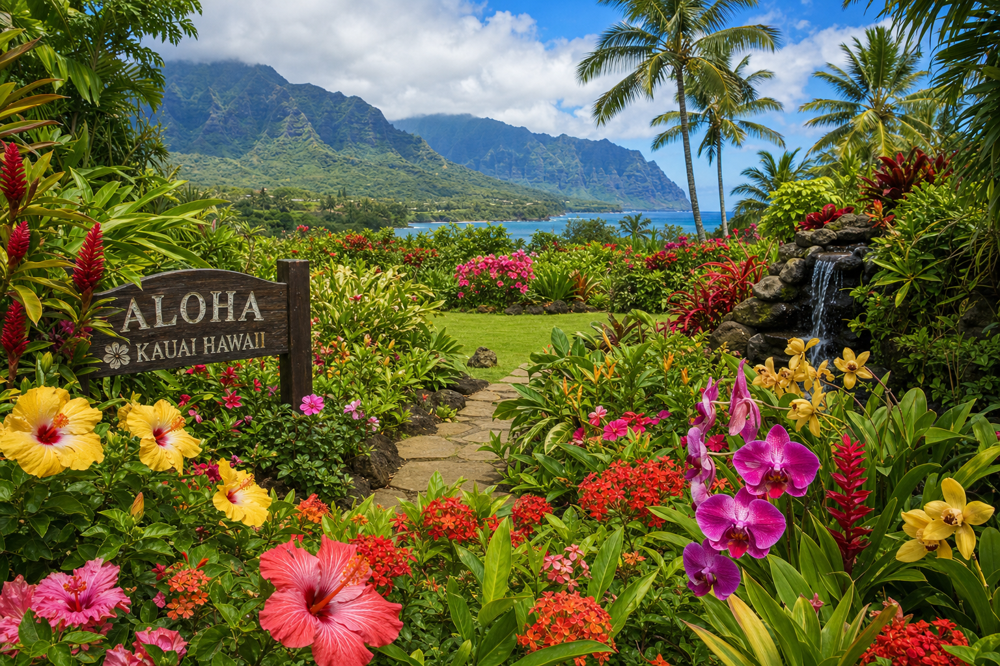

Kauai's Climate Demands Year-Round Attention
Kauai's year-round warmth and consistent rainfall create extraordinary conditions for plant growth. But those same conditions mean gardens grow fast — often too fast. Without consistent maintenance, a garden can go from beautiful to overgrown in a matter of weeks, especially on the North Shore and East Side where rainfall is highest.
Monthly Maintenance Calendar
January–March (Peak Rainy Season)
Focus on drainage. Ensure your garden beds have adequate runoff and that low spots aren't collecting standing water — this invites fungal disease and root rot. Prune aggressively during this period; plants will recover quickly with the rain. Check for and remove invasive weeds, which explode in the wet months.
April–June (Transition to Drier Season)
This is prime planting time. New plants get the benefit of both rain and increasing sunshine. Fertilize established plants as the growth season accelerates. Check irrigation systems as rainfall patterns begin to shift.
July–September (Driest Months)
Irrigation is critical. Deep, infrequent watering is better than shallow daily watering — it encourages deeper root growth that makes plants more drought-resilient. Watch for pests; dry weather can trigger aphid and spider mite outbreaks. Trim palms and remove dead fronds before trade wind season peaks.
October–December (Return of Rain)
Reduce irrigation as rains return. This is an excellent time for lawn aeration and overseeding thin patches. Add compost to garden beds before the rains come — it'll work into the soil naturally.
Year-Round Essentials
- Monthly palm frond removal: Kauai's palms grow fast. Dead fronds are a fire hazard and can harbor pests.
- Weekly edging: Grass grows aggressively into garden beds in Hawaii. Stay on top of it.
- Quarterly fertilization: Kauai's heavy rainfall leaches nutrients fast. Slow-release fertilizer every 3 months keeps plants healthy.
- Salt spray management: Properties within a mile of the coast should rinse salt from foliage during dry spells using a garden hose.